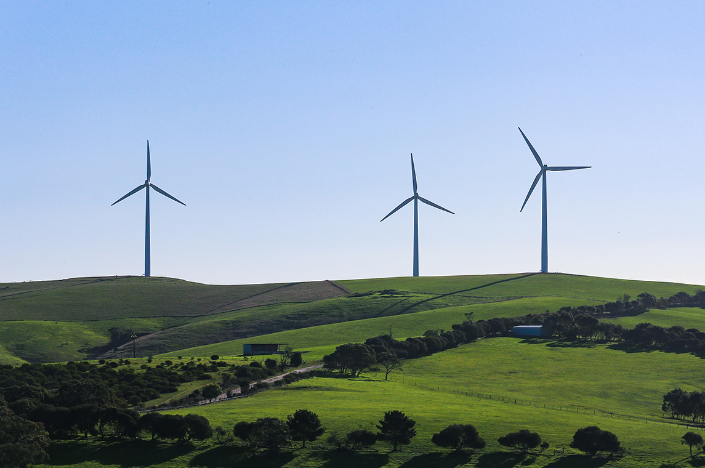
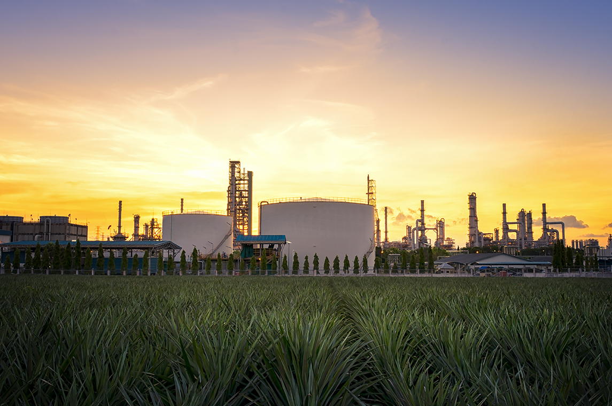
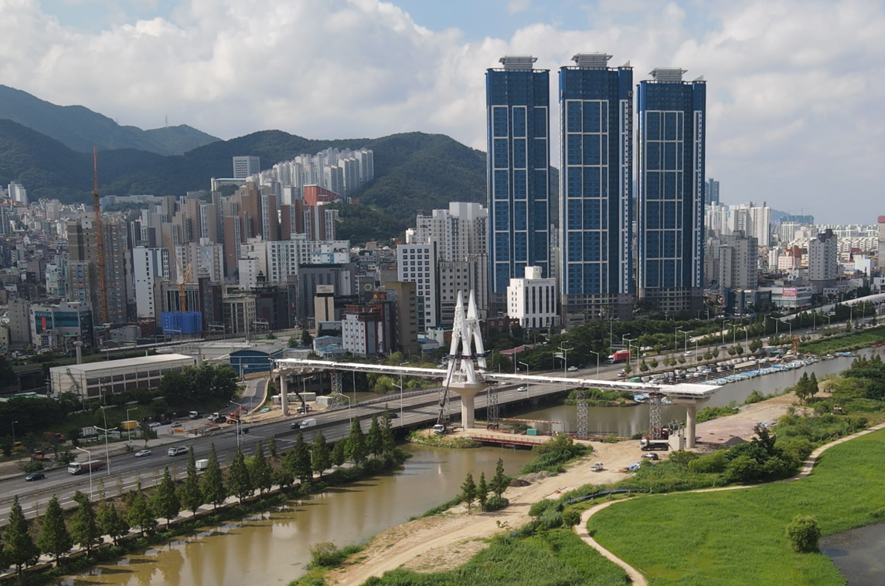
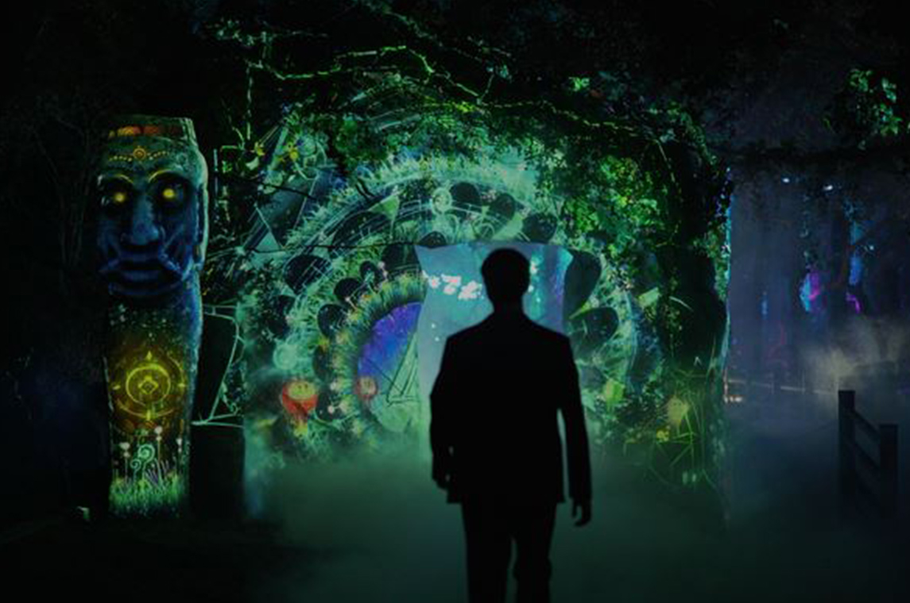
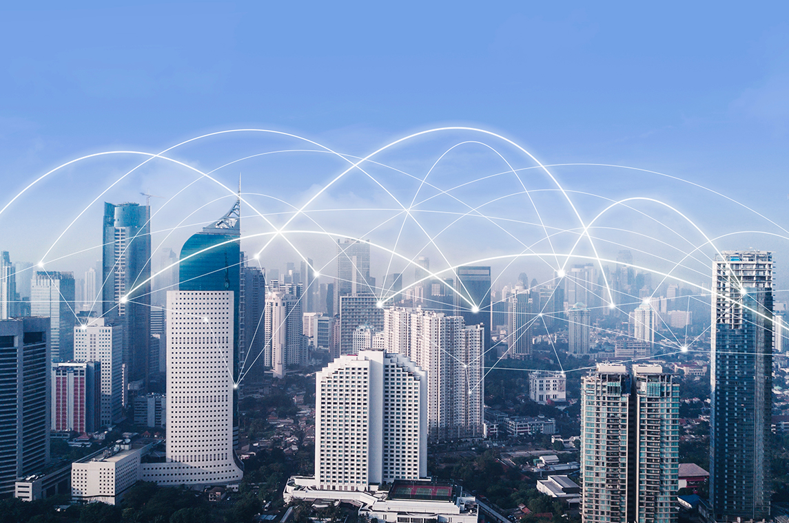

CLEAN AIR BUSINESS
대기환경사업
누리플랜그룹은 그린 테크놀로지를 활용하여 지속 가능한 지구환경에 기여합니다. 대기환경사업부는 미세먼지, 유해가스, 복합악취, 백연 및 안개를 저감하는 최적의 기술을 제공하며, 환경 설비의 연구개발부터, 시공, 사후관리까지 전 과정을 책임지고 있습니다.
누리플랜

PLANT BUSINESS
플랜트 사업
누리플랜그룹은 국가 기간 산업인 원자력 발전소, 화력발전소 및 기초 산업시설인 석유화학 플랜트, 제철 및 LNG 저장 탱크 등의 중공업 분야는 물론, 고부가가치 산업인 FPSO(해상 LNG 가스 생산·저장설비) 시설에 배관지지물을 설계·제조·공급하는 사업을 수행하고 있습니다.
유니슨HKR

CONSTRUCTION BUSINESS
건설 사업

MEDIA CONTENTS·LIGHTING BUSINESS
미디어 콘텐츠·조명 사업

IT BUSINESS